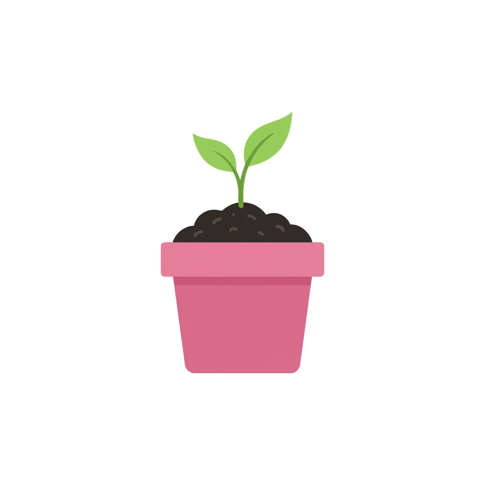

Boas-vindas ao Blog da Horta!
Por: Nathally Vitória Scremin
Aqui você vai aprender tudo sobre como cultivar temperos, vegetais e flores no conforto da sua casa!
Dicas, curiosidades e cultivo de plantas por Nathally Vitória Scremin

Por: Nathally Vitória Scremin
Aqui você vai aprender tudo sobre como cultivar temperos, vegetais e flores no conforto da sua casa!

Por: Nathally Vitória Scremin
Os tomates precisam de pelo menos 6 horas de sol por dia e regas regulares para crescerem fortes e saborosos.
Fonte: Minha Horta

Por: Nathally Vitória Scremin
Cascas de ovo e pó de café são excelentes fertilizantes naturais cheios de cálcio e nitrogênio para as plantas.
Fonte: Jardinagem Simples

Por: Nathally Vitória Scremin
Podar as pontinhas do manjericão frequentemente faz com que ele cresça mais cheio e com muito mais folhas!
Fonte: Guia Botânico

Por: Nathally Vitória Scremin
Regue sempre no início da manhã ou no fim da tarde. Isso evita que a água evapore rápido demais com o calor do sol.
Fonte: Horta Caseira

Por: Nathally Vitória Scremin
Uma mistura de água com sabão neutro em borrifador ajuda a afastar pulgões sem prejudicar suas plantinhas.
Fonte: EcoJardim